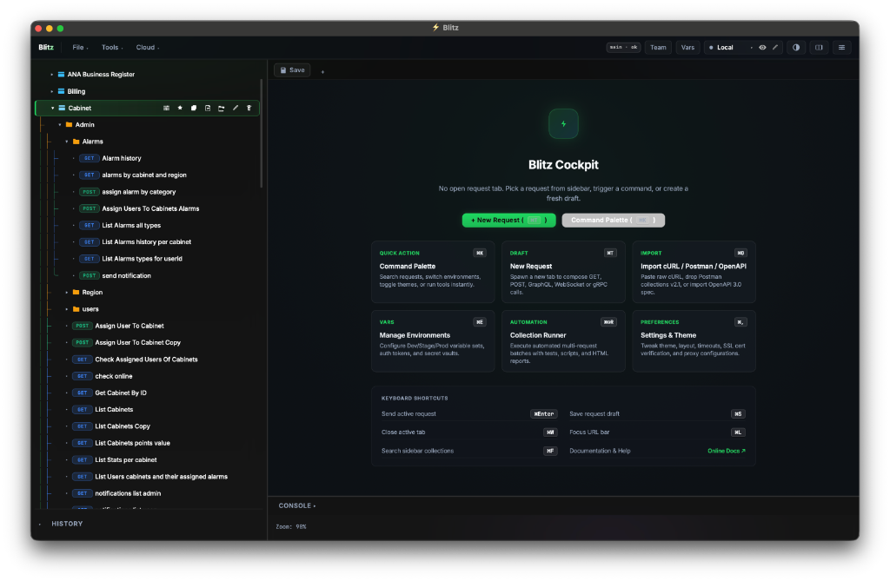
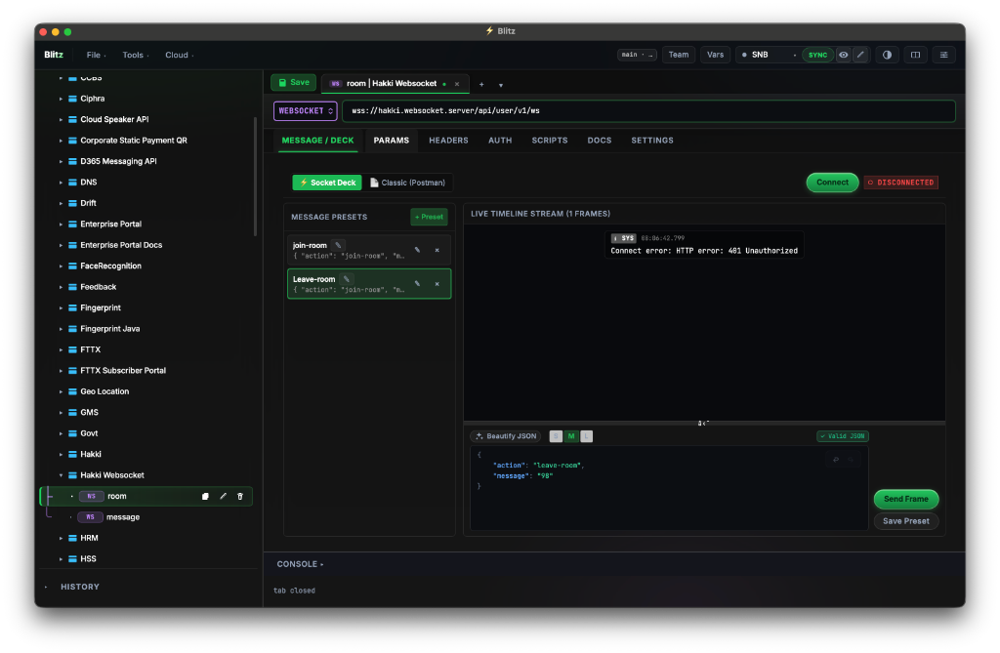

42-Tool Stdio MCP Server
Connect Cursor, Claude, or Antigravity in one command (blitz mcp setup) to run requests, inspect responses, and sync OpenAPI specs.
Blitz stores collections as clean Git-friendly JSON on your disk, locks secrets inside your OS Keychain via
{{vault:key}}, and exposes 42 stdio MCP tools to Cursor, Claude, and Windsurf—zero cloud logins, zero Electron RAM bloat.
curl -fsSL https://raw.githubusercontent.com/h3ma209/Blitz/master/install.sh | bash

Switch modes below to test the AI MCP tool trace, inspect live wire protocols, and verify how Keychain secrets stay out of Git.
Instead of pasting cURL commands and API keys into chat, ask your agent to import specs, hit staging endpoints, and generate test assertions locally.
blitz_sync_openapi → Synced 18 endpoints into Payments API collection.blitz_send_request → Resolved {{vault:stripe_key}} in Rust; returned 201 Created (41 ms).blitz_suggest_assertions → Added status 201 & body.payment_intent_id checks.{
"tool": "blitz_send_request",
"status": 201,
"elapsed_ms": 41,
"headers_sent": {
"Authorization": "Bearer [REDACTED:vault:stripe_key]"
},
"response_body": {
"id": "chk_91a8f2",
"status": "open",
"currency": "usd",
"amount_total": 4900
}
}
Test REST/GraphQL alongside bidirectional WebSockets, protobuf gRPC unary calls, Server-Sent Events, MQTT topics, Socket.IO, and external MCP servers.
GET https://{{baseUrl}}/v1/health HTTP/2
Authorization: Bearer {{vault:api_token}}
← 200 OK · 18 ms · TLS 1.3 · 412 B
{ "ok": true, "region": "iad", "uptime_s": 994120 }

Collections commit as clean, split JSON files to GitHub, GitLab, or Gitea. Secrets live strictly in macOS Keychain or local vault.json—never staged or pushed.
{
"method": "POST",
"url": "{{baseUrl}}/v1/charges",
"auth": { "type": "bearer", "token": "{{vault:prod_secret}}" }
}
prod_secret = sk_live_••••••••••••••••39a1 (gitignored)
Keep your payloads off third-party clouds, ditch per-seat licensing, and recover half a gigabyte of RAM.
| Capability | Blitz (v0.2.14) | Postman | Insomnia |
|---|---|---|---|
| Account / Cloud Login | Never required (100% local) | Mandatory cloud account | Cloud account pushed |
| AI Agent Integration | Built-in 42-tool stdio MCP server | Cloud AI add-on | None native |
| Secrets Storage | OS Keychain & local Vault ({{vault:*}}) |
Cloud-synced environments | Cloud-synced unless local |
| Team Collaboration | Your own Git repo + 3-way conflict UI | Paid per-seat cloud sync | Paid per-seat cloud sync |
| Protocols | HTTP/2, WS, gRPC, SSE, GraphQL, MQTT, Socket.IO, MCP | HTTP, WS, gRPC, GraphQL, MQTT | HTTP, WS, gRPC, GraphQL |
| License & Pricing | MIT Open Source · Free | Free tier limits + per-seat plans | Free tier limits + per-seat plans |
Connect Cursor, Claude, or Antigravity in one command (blitz mcp setup) to run requests, inspect responses, and sync OpenAPI specs.
Import existing collections and run pre-request & test scripts with zero rewrites—supports both blitz.* and pm.* APIs via embedded Boa.
Run entire suites in GitHub Actions or GitLab CI with blitz run and emit native JUnit XML reports with deterministic exit codes.
Benchmark virtual-user concurrency, RPS, error rates, and p50/p95/p99 latency histograms right from Tools or via blitz_perf_test.
Resolve Local → Environment → Collection → Global plus $faker generators and compare staging vs prod drift side-by-side.
Switch instantly between Spotify, Linear, and 9 VS Code IDE themes (One Dark Pro, Tokyo Night, Dracula, Catppuccin, Nord, GitHub Light).
Import your Postman v2.1 JSON, OpenAPI 3.0 YAML/JSON, cURL, or HAR capture on first launch.
Universal binary (Apple Silicon + Intel) via Homebrew or signed DMG release.
brew install --cask blitz
One-line install script for x86_64 & aarch64 AppImage / tarball builds.
curl -fsSL https://raw.githubusercontent.com/h3ma209/Blitz/master/install.sh | bash
PowerShell installer or standalone Windows executable from GitHub Releases.
irm https://raw.githubusercontent.com/h3ma209/Blitz/master/install.ps1 | iex
Build directly with Cargo (Rust 1.83+) from the open-source repository.
git clone https://github.com/h3ma209/Blitz.git && cargo build --release